תחבורה ציבורית, כל הקווים והתחנות
אוטובוסים, רכבת ורכבת קלה מלוח הזמנים הרשמי של משרד התחבורה. לוח יציאות לכל תחנה, תכנון נסיעה עם החלפות, יציאה עכשיו או בשעה שתבחרו – בלי אינטרנט.
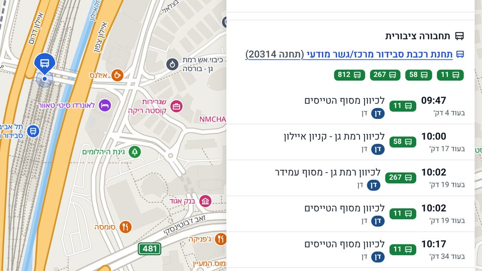
כל ישראל במפה אחת: מפות אופליין בעברית למחשב Windows, עם חיפוש חכם, ניווט, תחבורה ציבורית עם כל הקווים, שבילים וטופוגרפיה. הכול רץ על המחשב שלכם, מנתונים פתוחים, ומתעדכן כל שבוע.
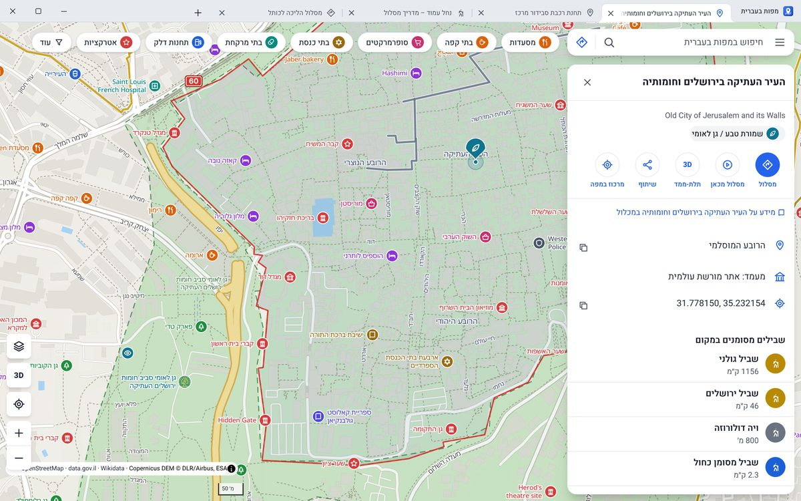
יכולות
מהחיפוש הראשון ועד הוראות הפנייה האחרונות, הכול נענה מהמחשב עצמו. מהר, בעברית, וגם כשהחיבור נופל.
אוטובוסים, רכבת ורכבת קלה מלוח הזמנים הרשמי של משרד התחבורה. לוח יציאות לכל תחנה, תכנון נסיעה עם החלפות, יציאה עכשיו או בשעה שתבחרו – בלי אינטרנט.

קווי גובה, הצללת תבליט ונקודות גובה, ותצוגה תלת־ממדית של הרים ועמקים.
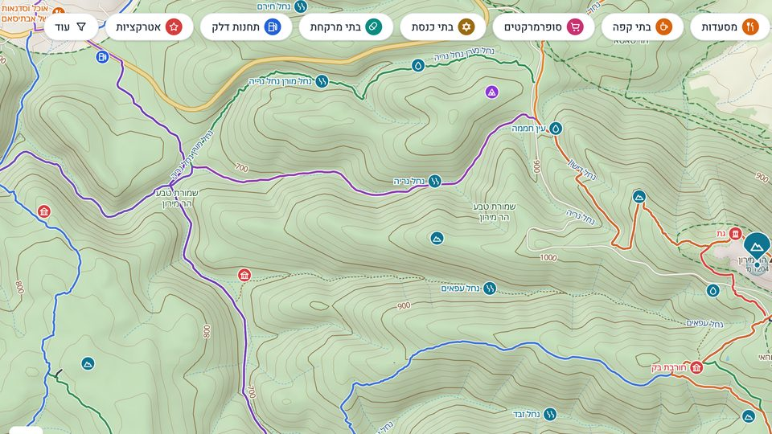
המפה, החיפוש, הניווט ולוחות הזמנים שמורים במחשב. באוטובוס, בשטח או ברשת מסוננת – הכול ממשיך לעבוד.
שמות, כתובות וקטגוריות, קיצורים ושגיאות כתיב – ואפילו הקלדה במקלדת אנגלית בטעות.
מסלולים חלופיים, זמן ומרחק, והוראות פנייה בעברית. בהליכה ובאופניים גם פרופיל גובה.
אלפי שבילים מסומנים בצבעיהם. לכל מסלול: שלבים, זמן הליכה לפי שיפוע, פרופיל גובה, מים ובטיחות – ואפשר להדפיס.
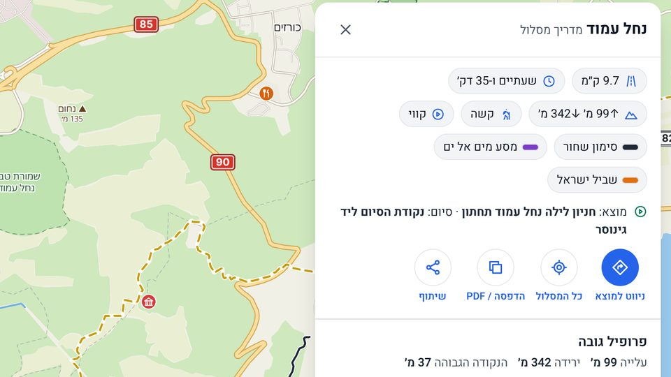
לבתי הכנסת יש לוח מניינים שבועי – שחרית, מנחה וערבית – מפרויקט זמני התפילות הארצי של נדרים פלוס. והמניין הבא בסביבה במרחק לחיצה.
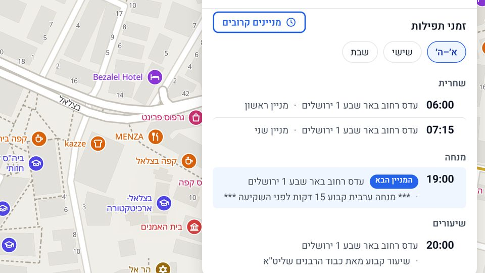
אורתופוטו של מרכז מיפוי ישראל. אפשר להוריד את כל הארץ למחשב, ברמת הפירוט שתבחרו.
כמה מפות במקביל בחלון אחד, כמו בדפדפן. נפתחות שוב בהפעלה הבאה.
לפי WCAG 2.1 AA: מקלדת מלאה, קוראי מסך, ניגודיות ורשימה טקסטואלית של המקומות.
מפה, תחבורה וזמני תפילות מתעדכנים מתוך האפליקציה, בלחיצה או אוטומטית.
סיור באפליקציה
כל התמונות צולמו מהאפליקציה עצמה, על נתוני ישראל המלאים.
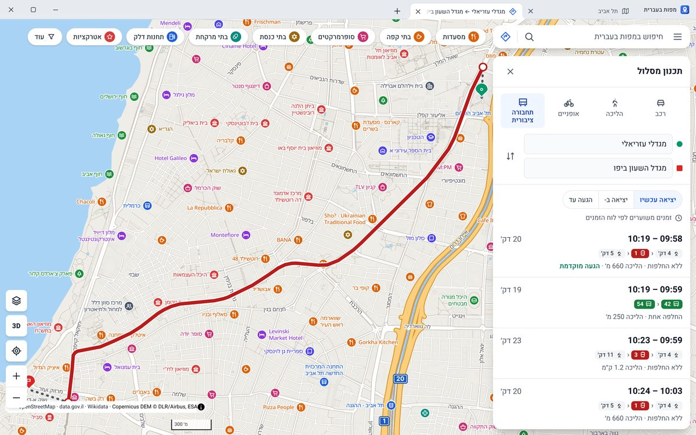
תכנון נסיעה עם זמני יציאה והגעה, החלפות והליכה, וחלופות: הגעה מוקדמת, פחות החלפות או פחות הליכה. מלוח הזמנים של משרד התחבורה, שמור במחשב – בלי אינטרנט.
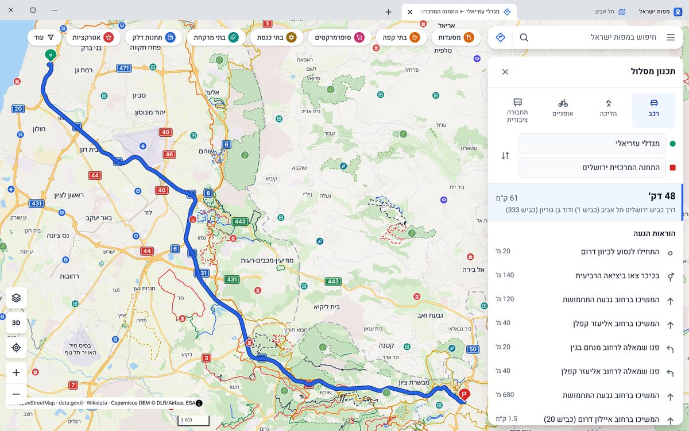
ברכב, ברגל או באופניים: מסלול, זמן ומרחק, פרופיל גובה עם עלייה וירידה מצטברות, והוראות כמו "בכיכר צאו ביציאה השנייה". מנוע הניווט רץ על המחשב.
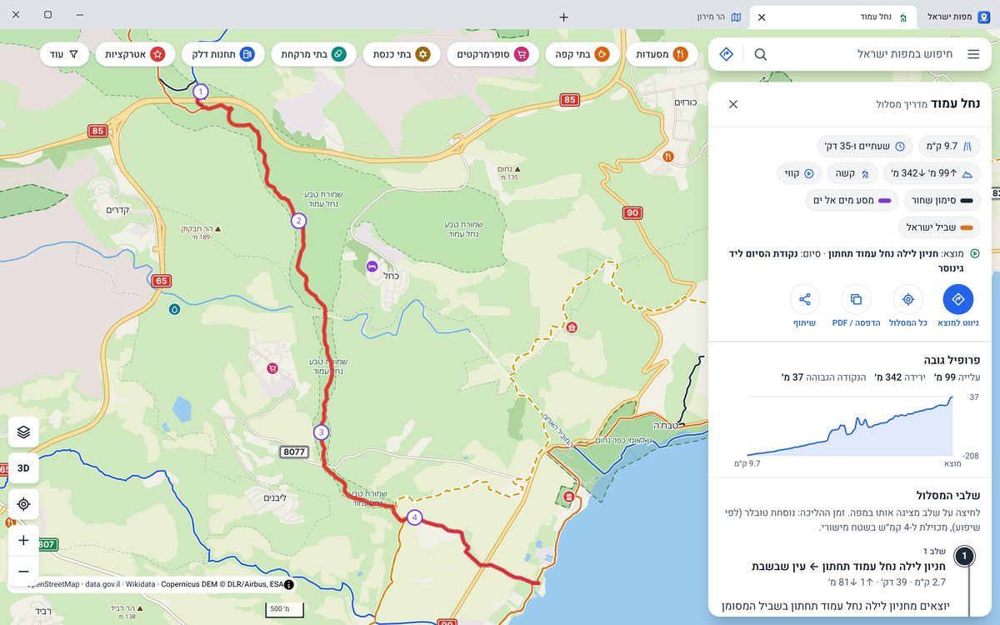
נחל עמוד, 9.7 ק"מ: שלבים ממוספרים, זמן הליכה לפי השיפוע, סימון השבילים בדרך, נקודות מים ואזהרות. אפשר לשמור כ-PDF ולהדפיס לפני היציאה.
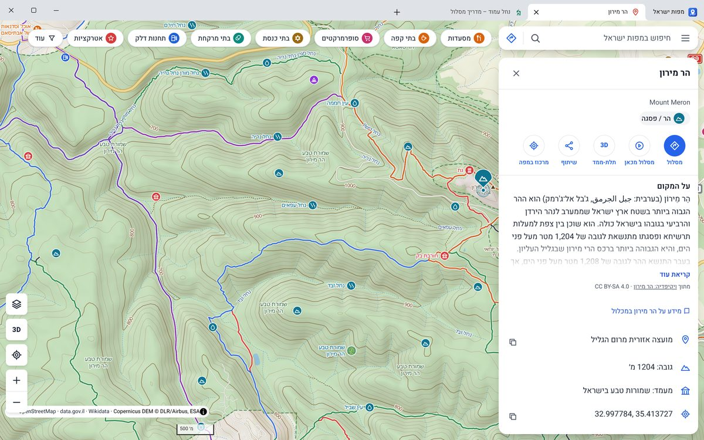
קווי גובה עד כל 10 מטר בזום קרוב, הצללת תבליט, פסגות ומעיינות, והשבילים המסומנים בצבעים שלהם. ארבעה סגנונות מפה: רגילה, טבע וטיולים, טופוגרפית ולילה.
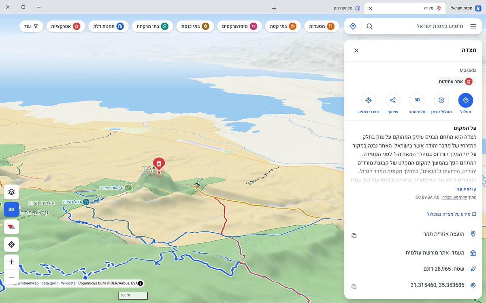
מטים את המפה ורואים את התבליט: הצוק של מצדה, הנחלים של מדבר יהודה ובקע ים המלח, מנתוני הגובה של Copernicus. כפתור "תלת־ממד" בכרטיס של כל אתר.
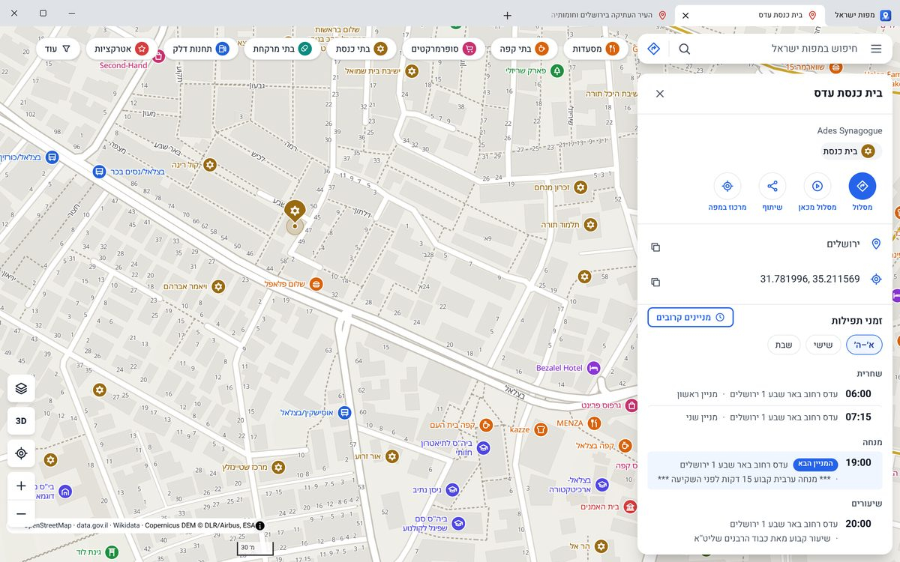
לוח המניינים של בית הכנסת – שחרית, מנחה וערבית לפי ימים – ישירות בכרטיס שלו, מפרויקט זמני התפילות הארצי של נדרים פלוס. מתעדכן כל שבוע.
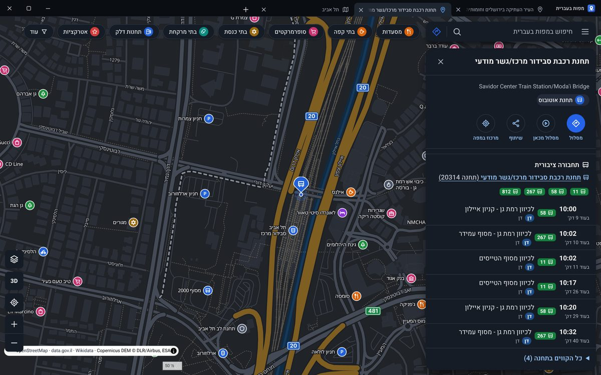
ממשק בהיר או כהה, אוטומטית לפי Windows או לפי בחירה, ומפת לילה תואמת. שורת הכותרת והלשוניות מתחלפות יחד עם המפה.
איך זה עובד
מפות ישראל היא תוכנה רגילה למחשב. המפה, החיפוש והניווט רצים במחשב שלכם, והאינטרנט נדרש רק כדי להוריד נתונים.
קובץ התקנה אחד ל-Windows 10/11. בלי הרשאות מנהל ובלי תוכנות נוספות.
בתפריט ← "עדכונים" ← "עדכן הכול": המפה, החיפוש, התחבורה הציבורית, הטופוגרפיה וזמני התפילות. פעם אחת.
מכאן הכול עובד מהמחשב. פעם בשבוע אפשר לעדכן – בלחיצה, או אוטומטית ברקע.
אין שרת שיודע מה חיפשתם או לאן נסעתם. האפליקציה פועלת מקומית, על המחשב.
גרסה חדשה מותקנת מדף "עדכונים" בלחיצה אחת, והתוכנה נפתחת מחדש. הנתונים שבמחשב נשמרים.
יורד רק מה שהשתנה: תמונות שנוספו או תיקון קטן למאגר ולמפה, במקום חבילה מלאה של ג'יגה.
שורת כותרת מימין לשמאל, כמה מפות במקביל, וכותרות לשוניות שמתעדכנות לפי מה שבמפה.
שלבים, זמן הליכה לפי שיפוע, פרופיל גובה, מים ובטיחות, והדפסה לשטח.
הקווים, היציאות הקרובות ולוח זמנים מלא לכל תחנה, כל התחנות של כל קו, וסמלי המפעילים.
שאלות נפוצות
מפות אופליין הן מפות שנשמרות על המחשב ועובדות בלי חיבור לאינטרנט. מפות ישראל מורידה פעם אחת את מפת ישראל המלאה – רחובות, כתובות, נקודות עניין, שבילים, גבהים ולוחות הזמנים של התחבורה הציבורית – ומכאן החיפוש, הניווט והתצוגה רצים מהמחשב עצמו, גם ברשת איטית, מסוננת או בלי רשת בכלל.
מורידים את קובץ ההתקנה ל-Windows ומתקינים. בפתיחה הראשונה בוחרים בתפריט "עדכונים" ← "עדכן הכול", והתוכנה מורידה את נתוני ישראל (כ-2GB). אפשר גם להעביר את הנתונים בקובץ למחשב שאין בו אינטרנט בכלל.
מפות באתר אינטרנט טוענות כל אריח וכל תוצאת חיפוש מהשרת, ולכן צריכות חיבור קבוע ושולחות לשרת מה שמחפשים. מפות ישראל היא תוכנת מפות למחשב: כל המפה שמורה אצלכם, החיפוש בעברית והניווט מחושבים מקומית, ושום חיפוש או מסלול לא יוצא מהמחשב.
כן. אחרי שמורידים את הנתונים פעם אחת, המפה, החיפוש, הניווט, התחבורה הציבורית, השבילים והטופוגרפיה עובדים מהמחשב בלבד. אינטרנט נדרש רק להורדת עדכונים, ולתצלומי אוויר באזור שעוד לא נשמר במחשב.
ממקורות פתוחים: OpenStreetMap (מפה, רחובות, נקודות עניין ושבילים), משרד התחבורה (לוחות הזמנים של התחבורה הציבורית, GTFS), Copernicus DEM (גבהים), נדרים פלוס (זמני תפילות), data.gov.il ו-Wikidata. תצלומי האוויר הם של מרכז מיפוי ישראל, לשימוש אישי, ותצלומי הלוויין – Sentinel-2 cloudless של EOX.
פעם בשבוע. חבילות חדשות נבנות אוטומטית ומתפרסמות ב-GitHub. באפליקציה: תפריט ← "עדכונים" ← "עדכן הכול", או הפעלה של בדיקה אוטומטית שבועית. המפה ממשיכה לעבוד בזמן העדכון.
ההורדה והעדכונים מגיעים מ-GitHub. אם ההורדה נחסמת, בקשו מהסינון לפתוח את הכתובות האלה:
github.comrelease-assets.githubusercontent.comobjects.githubusercontent.comלתצלומי האוויר: cdn.govmap.gov.il, ולתצלומי הלוויין (חלופה): tiles.maps.eox.at. שלמות כל קובץ נבדקת מול טביעת SHA-256, כך שהסינון לא יכול לפגוע בנתונים.
הכול רץ אצלכם. אין חשבון, אין מעקב, אין פרסומות, והחיפושים והמסלולים לא נשלחים לשום שרת. החיבורים היחידים לרשת הם הורדת העדכונים (מ-GitHub) ותצלומי האוויר (מ-govmap, או תצלומי לוויין מ-EOX) כשמפעילים אותם. למדיניות הפרטיות.
כן. קובץ ההתקנה עדיין לא חתום בתעודה מסחרית, ולכן SmartScreen מציג אזהרה. לוחצים על "מידע נוסף" ואז על "הפעל בכל זאת". הקובץ נבנה אוטומטית מקוד המקור הפתוח ב-GitHub. הסבר מפורט.
שום דבר. אין תשלום, אין מנוי ואין רכישות בתוך האפליקציה. קוד המקור פתוח ב-GitHub.
Windows 10 או 11 (64 ביט), 4GB זיכרון לפחות, וכ-2GB מקום פנוי לנתונים. החלון של האפליקציה משתמש ב-WebView2, שמותקן מראש ב-Windows 11 וב-Windows 10 מעודכן; בלעדיו המפה נפתחת בדפדפן. כל הדרישות.
הורידו את מפות ישראל, ותהיה לכם מפה של כל הארץ – גם כשאין קליטה.